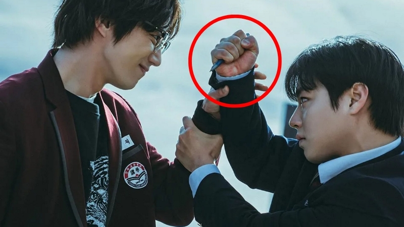

“그만해. 부탁한다..
그만하라고!! 부탁했잖아!!”
자극에 절여진 뇌에게 오늘도 부탁해보지만...
늘 그렇듯 쇼츠를 하릴없이 넘기는 내 검지손가락. 안녕하세요! 혹시 오늘도 눈 뜨자마자 스마트폰부터 찾으셨나요? 숏폼 영상을 넘기다 보니 어느새 몇 시간이 훌쩍 지나있고, 정작 해야 할 일 앞에서는 머리가 안개 낀 듯 멍해지는 경험, 다들 있으신가요?
저도 거의 매일 아침 반복하고 있는 나쁜 습관인데요. 이렇게 아침 시간을 허망하게 쇼츠에 쏟아붓고 나면 늘 스스로 자책하는 게 자연스러운 수순이죠. 하지만 이건 우리의 의지가 부족해서가 아니라는 사실!! (자기 합리화 중)
우리 뇌가 자극적인 '가짜 즐거움(도파민)'에 너무 익숙해져서, 일상의 소소한 행복이나 몰입의 즐거움을 잠시 잃어버린 상태일 뿐입니다. 오늘은 이렇게 과부하가 걸린 뇌를 다시 맑고 생생하게 되돌리는(Reset) 초간단 실전법을 소개해 드릴 테니, 좌절하지 말고 함께 해보자구요!
1. 가짜 도파민에서 탈출하기 (지금 바로 책상에서!)
혹시 지금 책상 앞에서 유튜브를 보고 계신가요? 우리는 휴식을 취할 때 보통 쇼츠와 넷플릭스에 빠져서는 ‘아, 이게 진정한 휴식이지~’라고 느낍니다. 하지만 이 끝없는 자극이 우리 뇌를 복잡하게 만드는 가장 큰 요인이라는 사실, 아셨나요?
📱 스마트폰 '흑백 모드'로 바꿨을 뿐인데?
지금 바로 스마트폰 설정에서 '화면 흑백 모드'를 켜보세요. 화려한 색감이 사라지는 것만으로도 뇌는 스마트폰을 훨씬 덜 매력적인 물건으로 인식하게 됩니다. 폰이 재미없다고 느끼는 것만으로도 뇌는 휴식 모드에 돌입합니다. 폰이.. 이렇게나 위험한 겁니다!
🧘 3분 '아무것도 안 하기' 챌린지
딱 3분만 알람을 맞추고 가만히 앉아 있어 보세요. 도파민에 절여진 분들에게는 쉽지 않을 겁니다. 처음엔 뇌가 지루하다고 아우성을 치겠지만, 그 지루함을 견디는 시간이 뇌에게는 최고의 보상입니다. 뇌가 스스로 에너지를 충전하는 '청소 시간'을 주는 것이니까요.
2. 걷기, 뇌를 위한 최고의 클리닝
산책은 단순히 몸을 움직이는 걸 넘어, 우리 뇌를 깨끗하게 씻어주는 것과 같아요. 고인 물이 썩듯, 앉아만 있으면 뇌도 게을러지거든요!
- 창의력 60% 폭발!: 걷는 동안 아이디어가 훨씬 잘 떠올라요. (Stanford)
- 집중력 20% 회복!: 자연 속 산책은 지친 뇌를 빠르게 회복시킵니다. (U-Michigan)
- 뇌의 천연 비료 'BDNF' 분비: 새로운 뇌세포를 만드는 마법의 단백질!
✅ 이어폰 없는 '진짜 산책': 문제가 안 풀릴 땐 딱 15분만 걸어보세요. 이때 핵심은 이어폰을 빼는 것입니다. 외부 정보 대신 발바닥의 감각과 바람 소리에 집중할 때, 뇌는 비로소 '진짜 자기 생각'을 시작합니다.
✅ 거실 걷기라도 괜찮아요: 밖으로 나갈 상황이 안 된다면? 거실을 왔다 갔다 하거나 제자리걸음만 해도 좋습니다. 몸의 움직임 자체가 전두엽을 자극해 고여 있던 생각을 돌게 만듭니다.
3. 연시은처럼 볼펜 필수!! 떠오른 아이디어 놓치지 마세요!
산책하다 보면 기발한 아이디어가 갑자기 '툭' 하고 떠오를 때가 있죠? 하지만 이 소중한 아이디어를 기록하지 않으면 연기처럼 사라져 버려요.
혹시 드라마 <약한영웅> 보셨나요? 주인공 연시은은 어떤 위기 상황에서도 늘 볼펜을 지니고 다니며 치밀하게 문제를 해결하죠. 물론 연시은은 볼펜으로 손등을 찍어내리지만, 우린 메모지를 찍어내리자구요.
✒️ 작은 수첩 + 볼펜의 힘
스마트폰을 꺼내는 순간 알림의 유혹에 빠집니다. 대신 작은 수첩과 볼펜을 주머니에 쏙 넣고 다니세요. 걸으면서 떠오른 생각들을 즉시 기록하는 아날로그 방식이 아이디어를 붙잡는 최고의 방법입니다.
✈️ 스마트폰 활용 시 '비행기 모드'
꼭 스마트폰으로 메모해야겠다면 산책 전에 '비행기 모드'를 켜두세요. 그리고 '음성 메모' 기능을 활용하는 걸 추천해요. 걷는 흐름을 유지하는 데 훨씬 좋습니다.
맺음말: 도파민 리셋의 목적은 즐거움을 끊는 게 아니에요. '자극적인 가짜'를 '은은하고 깊은 진짜(독서, 산책, 요리)'로 바꾸는 것이죠. 직접 몸을 움직여 성취감을 느낄 때, 우리 뇌는 중독성 없는 건강한 에너지를 만들어냅니다. 오늘부터 딱 하나만 골라서 해보세요! 여러분의 머리가 다시 맑고 개운해질 거예요.
🧠 내 뇌는 지금 '맑음' 상태일까?
가짜 도파민을 비워냈다면, 이제 진짜 몰입의 즐거움을 느낄 차례입니다. 지금 바로 훈련센터에서 여러분의 집중력과 반응 속도를 측정해 보세요!
집중력 테스트 시작하기 →📚 신뢰를 더해주는 근거들
- Stanford University (2014): 걷기가 창의적 사고에 미치는 영향
- Anna Lembke <도파민 네이션>: 쾌락 과잉 시대의 뇌 균형
- Anders Hansen <뇌는 달리고 싶다>: 운동과 지능의 원리